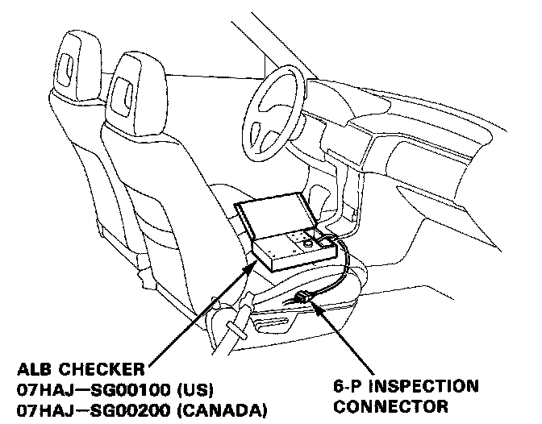
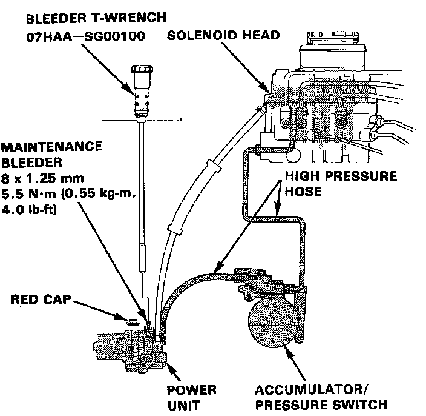
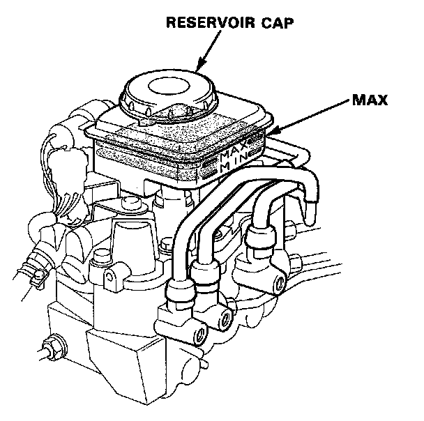

Bleeding Procedure

1. Disconnect the 6-P inspection connector from the connector cover on the cross-member under the front passenger seat and connect the inspection connector to the ALB checker.
CAUTION: Place the vehicle on level ground with the wheels blocked. Put the transmission in neutral for manual transmission models, and in P for automatic transmission models.
2. Fill the modulator reservoir to the MAX level.
Note: Do not reuse aerated brake fluid that has been bled from the power unit.

3. Bleed high pressure fluid from the maintenance bleeder with the special tool.
4. Start the engine and release the parking brake.
5. Turn the Mode Selector to 6, depress the brake pedal firmly and press the Start Test button. There should be at least two strong kickbacks. If not, repeat steps 2 through 5, as necessary.

6. Fill the modulator reservoir up to the MAX level.
7. Install the reservoir cap.
8. Check the ALB function in all modes by using the ALB checker.